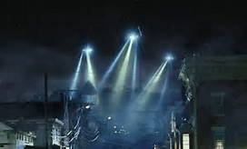

"God keep me!—keep us all!" murmured Starbuck, lowly.
But in his joy at the enchanted, tacit acquiescence of the mate, Ahab did not hear his foreboding invocation; nor yet the low laugh from the hold; nor yet the presaging vibrations of the winds in the cordage; nor yet the hollow flap of the sails against the masts, as for a moment their hearts sank in. For again Starbuck's downcast eyes lighted up with the stubbornness of life; the subterranean laugh died away; the winds blew on; the sails filled out; the ship heaved and rolled as before. Ah, ye admonitions and warnings! why stay ye not when ye come? But rather are ye predictions than warnings, ye shadows! Yet not so much predictions from without, as verifications of the foregoing things within. For with little external to constrain us, the innermost necessities in our being, these still drive us on.
"The measure! the measure!" cried Ahab.
Receiving the brimming pewter, and turning to the harpooneers, he ordered them to produce their weapons. Then ranging them before him near the capstan, with their harpoons in their hands, while his three mates stood at his side with their lances, and the rest of the ship's company formed a circle round the group; he stood for an instant searchingly eyeing every man of his crew. But those wild eyes met his, as the bloodshot eyes of the prairie wolves meet the eye of their leader, ere he rushes on at their head in the trail of the bison; but, alas! only to fall into the hidden snare of the Indian.
He was also told that the Midland Railway Company had replaced the desertions of the first day's panic, had resumed traffic, and was running northward trains from St. Albans to relieve the congestion of the home counties. There was also a placard in Chipping Ongar announcing that large stores of flour were available in the northern towns and that within twenty-four hours bread would be distributed among the starving people in the neighbourhood. But this intelligence did not deter him from the plan of escape he had formed, and the three pressed eastward all day, and heard no more of the bread distribution than this promise. Nor, as a matter of fact, did anyone else hear more of it. That night fell the seventh star, falling upon Primrose Hill. It fell while Miss Elphinstone was watching, for she took that duty alternately with my brother. She saw it.
On Wednesday the three fugitives--they had passed the night in a field of unripe wheat--reached Chelmsford, and there a body of the inhabitants, calling itself the Committee of Public Supply, seized the pony as provisions, and would give nothing in exchange for it but the promise of a share in it the next day. Here there were rumours of Martians at Epping, and news of the destruction of Waltham Abbey Powder Mills in a vain attempt to blow up one of the invaders.
People were watching for Martians here from the church towers. My brother, very luckily for him as it chanced, preferred to push on at once to the coast rather than wait for food, although all three of them were very hungry. By midday they passed through Tillingham, which, strangely enough, seemed to be quite silent and deserted, save for a few furtive plunderers hunting for food. Near Tillingham they suddenly came in sight of the sea, and the most amazing crowd of shipping of all sorts that it is possible to imagine.
For after the sailors could no longer come up the Thames, they came on to the Essex coast, to Harwich and Walton and Clacton, and afterwards to Foulness and Shoebury, to bring off the people. They lay in a huge sickle-shaped curve that vanished into mist at last towards the Naze. Close inshore was a multitude of fishing smacks--English, Scotch, French, Dutch, and Swedish; steam launches from the Thames, yachts, electric boats; and beyond were ships of large burden, a multitude of filthy colliers, trim merchantmen, cattle ships, passenger boats, petroleum tanks, ocean tramps, an old white transport even, neat white and grey liners from Southampton and Hamburg; and along the blue coast across the Blackwater my brother could make out dimly a dense swarm of boats chaffering with the people on the beach, a swarm which also extended up the Blackwater almost to Maldon.
| Data Field 1 | Data Field 2 | Data Field 3 |
|---|---|---|
| Name 1 | Date 1 | Number 1 |
| Name 2 | Date 2 | Number 2 |
He was also told that the Midland Railway Company had replaced the desertions of the first day's panic, had resumed traffic, and was running northward trains from St. Albans to relieve the congestion of the home counties. There was also a placard in Chipping Ongar announcing that large stores of flour were available in the northern towns and that within twenty-four hours bread would be distributed among the starving people in the neighbourhood. But this intelligence did not deter him from the plan of escape he had formed, and the three pressed eastward all day, and heard no more of the bread distribution than this promise. Nor, as a matter of fact, did anyone else hear more of it. That night fell the seventh star, falling upon Primrose Hill. It fell while Miss Elphinstone was watching, for she took that duty alternately with my brother. She saw it.
On Wednesday the three fugitives--they had passed the night in a field of unripe wheat--reached Chelmsford, and there a body of the inhabitants, calling itself the Committee of Public Supply, seized the pony as provisions, and would give nothing in exchange for it but the promise of a share in it the next day. Here there were rumours of Martians at Epping, and news of the destruction of Waltham Abbey Powder Mills in a vain attempt to blow up one of the invaders.